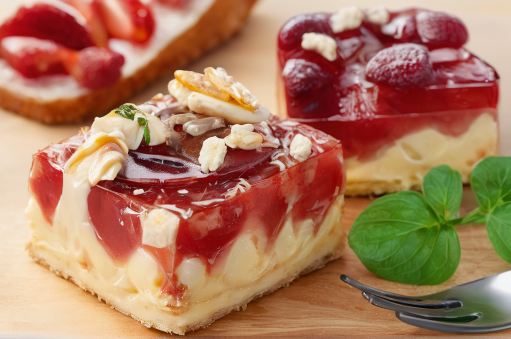

Hozzávalók:
tésztához:
- 400 g liszt
- 4 tojás
- 1 Csipet só
töltelékhez:
- 200 g darált dió
- 150 g porcukor
- 1 tk őrölt fahéj
- 1 ek méz
- Zsíros tej vagy tejföl a kenéshez
Elkészítés:
- Először készítsük el a tésztát a hajtészta recept alapján, amelyet korábban megosztottam.
- Amíg a tészta pihen, készítsük el a diós tölteléket. Egy tálban keverjük össze a darált diót, a porcukrot, az őrölt fahéjat és a mézet. Ha szükséges, adjunk hozzá egy kis vizet, hogy a töltelék könnyen kenhető legyen.
- Nyújtsuk ki a pihentetett tésztát vékony lapokká.
- Kenjük meg a tészta lapokat a diós töltelékkel.
- Tekergessük fel a tésztát a töltelékkel töltve, majd vágjuk fel kb. 2 cm-es darabokra.
- Helyezzük a tészta darabokat sütőpapírral bélelt tepsire, és kenjük meg őket egy kevés zsíros tejjel vagy tejföllel.
- Süsse őket előmelegített sütőben 180°C-on kb. 15-20 percig, vagy amíg aranybarnák lesznek.
- Tálalhatjuk porcukorral megszórva vagy mézes tejföllel.